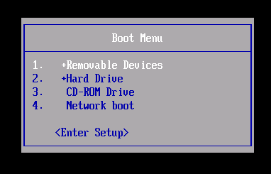

Most computers do not start on the Tails USB stick automatically but you can press a Boot Menu key to display a list of possible devices to start from.
If Windows 8 or 10 is also installed on the computer, you can refer instead to the instructions on starting Tails from Windows 8 or 10. Starting Tails from Windows is easier than using the Boot Menu key.
The following screenshot is an example of a Boot Menu:

This animation summarizes how to use the Boot Menu key to start on the USB stick:
The following instructions explain in detail how to use the Boot Menu key to start on the USB stick:
-
Shut down the computer while leaving the USB stick plugged in.
Shut down the computer and plug in the Tails USB stick.
Shut down the computer.
Plug in the other Tails USB stick that you want to install upgrade from.
Unplug your Tails USB stick while leaving the intermediary USB stick plugged in.
-
Identify the possible Boot Menu keys for the computer depending on the computer manufacturer in the following list:
Manufacturer Key Acer F12, F9, F2, Esc Apple Option Asus Esc Clevo F7 Dell F12 Fujitsu F12, Esc HP F9 Huawei F12 Intel F10 Lenovo F12 MSI F11 Samsung Esc, F12, F2 Sony F11, Esc, F10 Toshiba F12 others… F12, Esc On many computers, a message is displayed very briefly when switching on that also explains how to get to the Boot Menu or edit the BIOS settings.
-
Switch on the computer and immediately press several times the first possible Boot Menu key identified in step 2.
-
If the computer starts on another operating system or returns an error message, shut down the computer again and repeat step 3 for all the possible Boot Menu keys identified in step 2.
If a Boot Menu with a list of devices appears, select your USB stick and press Enter.
If the computer starts on Tails, the Boot Loader appears and Tails starts automatically after 4 seconds.